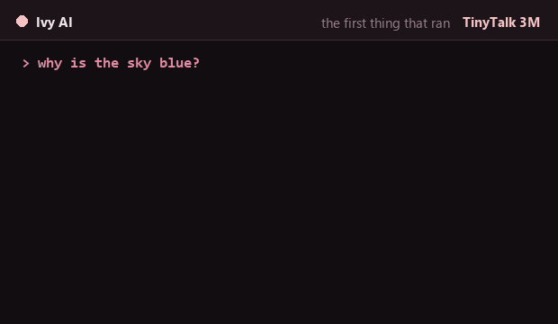
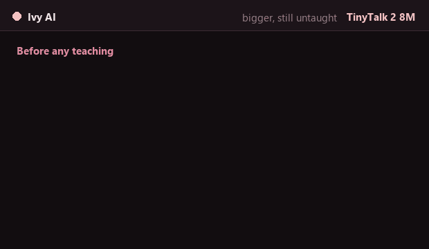
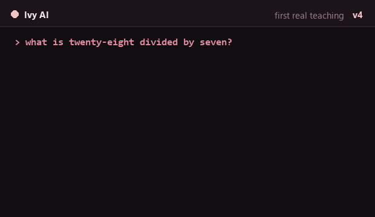
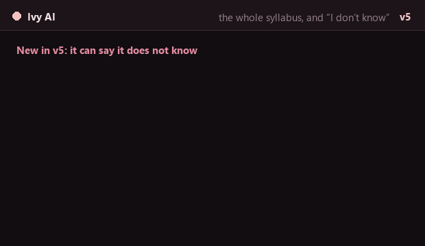
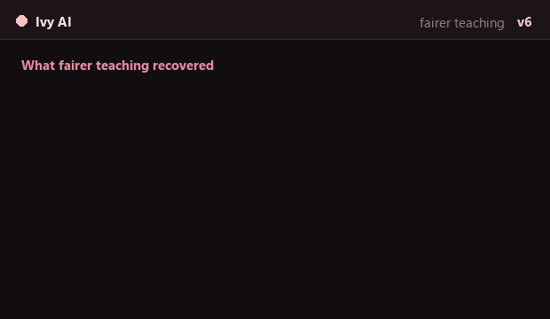
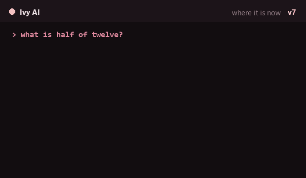

It listens.It answers.Wi-Fi off.
A speech recogniser, a language model and a speech synthesiser taking turns inside 8 MB of PSRAM on a board that costs less than a takeaway. Ask out loud, or type it. No cloud, no account, no microphone leaving the room. It is a proof of concept, and this page is the write-up as much as the demo — what it cost, what broke, and the numbers we actually measured.
It runs with
the Wi-Fi off.
Not "private cloud". Not "we don't store it". There is no network path for your voice to take, because the recogniser, the model and the voice all live on the SD card and run on the chip. Pull the aerial off and nothing about the conversation changes.
Wi-Fi is used for one thing: asking an NTP server what time it is, once an hour, so the clock is right. That is the entire list.
The only way to prove audio never leaves a device is for there to be nowhere for it to go.
Cyan means
no AI touched this.
The time, the date, its own name, a kitchen timer — those are twenty lines of C, not a language model, and the screen says so with a cyan diamond. Everything else came from a model small enough to fit here, which means it is sometimes wrong and says so in its own voice.
An assistant that tells you which answers it made up is worth more than one that sounds confident about both kinds.
no AI — a label, not a disclaimer buried in a settings page.
Ask out loud.
Or type it.
Press BOOT, say your question, and stop talking — {{SILENCE}} of silence is how it knows you have finished. Or tap the question in on the on-screen T9 keypad and skip the microphone entirely.
The same model answers either way, and the typed path is also the honest way to see what the model can do without the recogniser's mistakes in the middle of it.
A speech recogniser that mishears "red robot" as "re robot" is a different failure from a model that does not know the answer. Typing tells the two apart.
Internal RAM,
not compute.
The chip is fast enough. What it does not have is fast memory: about 264 KB of internal SRAM that the recogniser, the model, the radio and the operating system all want at once. So the pipeline runs in phases, and each phase hands the whole arena back before the next one starts.
Twelve consecutive conversations, measured: zero drift. The same {{HEAP_FREE}} bytes free after turn twelve as after turn one.
Where each tensor lives decides what fits. Not how fast the chip is.
The score fell
and that was
the improvement.
Version 4 scored 64.2% and version 7 scored 60.9%, and v7 is the better model by a distance — it answers a question space three times larger, and it is allowed to say I don't know. The exam got harder and fairer at the same time as the model got better, which is what makes a headline benchmark number almost meaningless on its own.
The whole arc, including the two experiments that were predicted to help and made it worse, is in the build log.
A benchmark that only ever goes up is measuring the wrong thing.
Choose a model.
Or train your own.
The model is a file on the SD card, not something baked into the firmware. Drop in a different GGUF and point the device at it — the ones already measured on this board are in Results, with the arithmetic that tells you whether a candidate will fit before you download it.
Or train one. The whole pipeline is written up: generate the question set, fine-tune on a Mac overnight, convert to the device format, copy it to the card.
The interesting thing about a model that fits on a card is that you can replace it.
The build log.
Six questions, each answered with a number and what it cost to get it. Stop after any one of them and you will have learned one whole thing. Every figure below is measured on the board described in STAGE_E_RESULTS.md or on the training runs behind TECHNICAL_REPORT.md.
Can a board this cheap hear you at all?
Yes — 13.1M int8 parameters, streamed off an SD card.
A conformer CTC recogniser, distilled and quantised until it fits, with the weights read from the card rather than held in memory. Open takes {{STT_OPEN}} and the encoder does 1.4–2.9 seconds of audio in 2.7–4.6 seconds, of which about 1.2 s is nothing but SD reads — 12.55 MB of them per sentence.
Two things had to be true and neither was obvious. The model file must be opened unbuffered, because the C library's buffering turns one large read into many small ones against a card that punishes exactly that. And the mel filter must stay resident: evict it to save memory and every utterance pays to rebuild it.
Why is there a phase arena?
Because internal RAM runs out first, and Wi-Fi takes 171 KB of it.
One PSRAM arena, one internal arena, and a phase that begins, takes what it needs, runs, and gives all of it back. Every transition logs free memory, largest block, minimum-ever and how long the phase took, so a regression shows up as a number rather than a crash three weeks later.
The counter-intuitive part: PSRAM is not the scarce resource. Internal SRAM is. The radio's permanent allocations came out of it until a boot-time warm-up pushed them elsewhere, and the recogniser's first convolution had to be tiled to fit what was left. Minimum-ever internal free across the soak: {{MIN_FREE}} bytes.
Why are there seven versions of the model?
Because each one answered the previous one's failure, and two answers were wrong.
3M was too small to hold a conversation. 8M fit, and could not answer a child's question — so the training data was generated from Braino!'s own game tables, the same author's other project, which turns "teach it everything" into a closed set you can actually enumerate. Then v5 learned to refuse questions outside that set, which is the feature that makes the rest trustworthy.
Two predictions failed, and both are worth more than the successes. Class balancing was expected to help, and hurt. Raising paraphrases per fact from 14 to 20 was expected to close the gap between wording the model had seen and wording it had not; it widened it, to {{PHRASE_GAP}} points, while trained-wording accuracy hit a perfect 100%. The model memorised harder instead of generalising better.
The diagnosis survived anyway, and got stronger. 0.0% of the 19,813 facts are wrong under every wording tried — so all of them are stored and retrievable, and the bottleneck is phrasing, not capacity. Only the proposed remedy was wrong. It is written up as a falsified prediction rather than quietly dropped.
What actually fits?
About 10M weights at Q4 — and the arithmetic tells you before you download anything.
Q4_0 costs 0.5625 bytes per weight, so the budget is roughly ten million
of them. Non-embedding weights come to layers × (2·dim² + 2·dim·kv_dim
+ 3·dim·ffn). dim and ffn must be multiples
of 32 or the weights cannot be quantised at all. And a 32,000-token
vocabulary is usually most of a tiny model, so shrink it first — 65.3% of
our parameters were embedding rows, against a corpus using 8.9% of the
vocabulary.
The models that didn't fit are in Results, with the reason for each. One publicly available conversion turned out to be broken upstream — it produces garbage in llama.cpp's own maths too.
How fast does it feel?
{{E2E}} from the end of your sentence to the first syllable back.
The full breakdown is in Results. The short version is that the model is not the slow part: generation runs at {{TOK_S}} and loading it from the card takes {{LLM_LOAD}}. The recogniser is the slow part, and inside the recogniser the SD card is the slow part.
Which is the useful kind of answer, because it says what to fix next: double-buffer the reads, not the maths.
What went wrong that we'd rather not print?
Six measurement bugs — every one of which flattered the result.
A metric that scored the wrong substring. Evaluation running on the GPU
when greedy decoding is sequential, so the CPU was 22× faster and a
15.6-hour run became 50 minutes. A crashed run that reported success,
because it was piped through tee. A trainer that saved the
final epoch instead of the best one. Held-out sets that tested the wrong
thing. A grader with two parsing bugs.
The pattern is the finding: every one of them made the results look better, faster or cleaner than they were. In a regime where a single experiment costs hours, the evaluation code is as likely to be wrong as the model — and it fails in the direction you are least likely to question.
Results.
Measured on a Freenove FNK0104B — ESP32-S3, 8 MB octal PSRAM, 16 MB flash — under ESP-IDF v6.1. Nothing here is simulated and nothing uses a network. These tables are generated from the repository at build time, so a figure cannot be right in the docs and stale on this page.
Seven versions. Four measured this way.
v1 to v3 were the 3M and 8M models before there was a held-out set worth the name, so they have no comparable number and are not shown. That is the honest reason, and it is also the first of the measurement lessons.
{{SCORES_CHART}}Where a turn goes
{{TIMING_CHART}}Memory per phase
Each phase takes the arena, runs, and hands all of it back. The internal arena is the tight one.
Models run on the device
And the ones that did not fit
Negative results, with the rule that predicts them. stories42M (~14 MB of layers), TinyStories-LLaMA2-25M (feed-forward alone ~5.2 MB), delphi-suite v0-llama2-12.8m (7.9 MB), Felladrin/Minueza-32M (~7 MB of layers), SmolLM2-135M and everything above it. The delphi-suite 1.6m and 3.2m models fail for a different reason: dim 168 and 216 are not multiples of 32, so they cannot be quantised and stay F32 — which makes the smaller model the one that is too big.
Firmware size today: {{APP_BYTES}} bytes of the {{APP_PART}} application partition ({{APP_PCT}}). The models are not in here — they live on the SD card, which is why the install is two steps.
How it learned.
Six versions of the same small brain, from one that knew nothing to the one in the device today. No background needed — this page assumes you have never trained anything and do not much care what a language model is. Every answer quoted below is one the model really gave, and where we did not keep a record, it says so instead of inventing something plausible.
Three things worth knowing first
It does not look anything up
There is no encyclopedia on the card and no search. The model works by predicting what word most likely comes next, over and over. Everything it "knows" is baked into a few million numbers, which is why it can be confidently, fluently wrong.
Training is just showing it examples
We write out thousands of question-and-answer pairs and show them to it repeatedly. It nudges those numbers a little each time so its guesses get closer. That is the whole of it — there is no moment where anyone explains a rule to it.
The only score that counts is on questions it never saw
Test it on the exact questions it was taught and it looks brilliant, because it can simply memorise. So we hold a set back — same facts, different wording — and that is the number we quote. It is always the lower one.
Why the scores go down as well as up
Twice we made the exam harder on purpose: more subjects, and permission to say "I don't know". A model that answers fewer questions but stops making things up is better, and scores worse. Watch what changed, not just the number.
Ask the same question to each version
Pick a question and watch what the different versions said. These are real recorded answers, warts and all.
{{DEMO}}Watch each version answer
One recording per version, at the speed the device really produces text — a shade over thirteen tokens a second, which is roughly ten words and slower than you expect. Each one carries the file its transcript came from, so a recording that gets reposted on its own still says where it is from.






The six versions, in order
The bar is the score on questions it had never seen before, out of 70% — not out of 100, because nothing here has ever been near 100 and a chart that pretends otherwise is flattering itself.
{{TIMELINE}}What still does not work
This is the newest model, v7, the one in the device now. These are its worst subjects, worst first, and none of them is a rounding error.
{{STILL_BROKEN}}The honest summary: it can hold roughly twenty thousand facts and get almost none of them wrong when you ask the way it was taught. Ask in your own words and it is right about six times in ten. It cannot tell the time, it is poor with animals, and it is worst at the easiest sums on the list. It is a proof of concept, and that gap is the proof of what is still missing.
What we tried that did not work is in Train your own; the measurements and the ablations behind all of it are in TECHNICAL_REPORT.md.
Install.
Flash, then copy.
Your browser can flash the firmware over Web Serial. It cannot write your SD card, and the firmware without the models is a device that boots and cannot hear you. So there are two steps, and the second one is not optional. Anyone who tells you it is one click is going to leave you with a board that looks like it worked.
- Get the board. A Freenove FNK0104B (ESP32-S3, 8 MB PSRAM, 16 MB flash, ILI9341 screen, ES8311 codec, mic and speaker), and a microSD card formatted FAT32 with about 64 MB free — the models live on it, and the device cannot hear or speak without it. A battery is optional and nothing needs soldering.
- Flash the firmware. Chrome or Edge, plug the board in
over USB, press the button below and pick the serial port. About a minute.
The installer is wired up by the Pages build; on a local preview this button is inert.
- Put the models on the card. Download
ivy-sd-{{VERSION}}.zipfrom the release and unzip it to the root of a FAT32 card — the exact layout is below. About 20 MB. - Say something. Press BOOT, ask a question, and stop talking — {{SILENCE}} of silence is how it knows you have finished.
Why there is an SD card at all
The three models are about 20 MB together and the application partition is {{APP_PART}}, most of which the firmware already uses. They could not be flashed alongside the code even if we wanted them there.
Which turned out to be the better arrangement anyway: the model is a file, so swapping the brain is copying a folder rather than reflashing a board, and you can keep several on one card and pick between them on the device. Everything is read from the card on demand, a phase at a time — nothing needs to fit in memory all at once.
What to buy: any microSD card, formatted FAT32, with about 64 MB free. Size and speed class barely matter; the card is read, never written. exFAT is not supported.
What goes on it
Two fixed folders, plus one folder per language model. Unzipping the release bundle at the root of the card produces exactly this:
/story/
stt/
model.bin conformer speech recogniser 13.8 MB
tts/
en-US_ta.bin Pico text analysis ~1 MB
en-US_lh0_sg.bin Pico signal generation ~1.4 MB
llm8m_v4/ a language model ~4.5 MB
model.bin the Q4 weights
tok.bin the tokenizer
name.txt optional: what to call it on screen
/models/
something.gguf optional: GGUF models, one file each/story/stt/ and /story/tts/
Fixed paths, and the firmware looks nowhere else. Miss these and the device boots, shows its screen, and cannot hear or speak — which is the failure most likely to look like broken hardware.
/story/llm*/
Any folder whose name starts with llm and contains both
model.bin and tok.bin is offered as a model.
Add as many as the card holds; the device lists them and remembers which
one you picked. Drop a name.txt in to label it.
/models/*.gguf
The other format: a single GGUF file, llama.cpp's, rather than a folder. The ones already measured on this board are in Results, and Train your own covers converting one.
Copying it across
A card reader and drag-and-drop is fine. Or leave the card in the board
and push over USB with python tools/sd_put.py --manifest,
which runs at about 720 KB/s and checks a CRC on every file —
useful when you are swapping models often.
Model files are licensed separately from the firmware, and some of them may not be redistributed by us at all — so the bundle carries each model's own licence beside the bytes, and anything we cannot ship is fetched by a script instead. See THIRD_PARTY.md.
What you can ask it.
Two kinds of answer, and the screen always tells you which one you got.
no AI
The time. The date. Its own name. A timer — "set a timer for five minutes". These are plain C: deterministic, instant, and incapable of making something up. The cyan diamond on screen means no model was involved.
The model
Everything else. Arithmetic with the working shown, fractions and percentages, elements, countries and capitals, US states, Roman numerals, money, time-telling, vocabulary — the question space of a 40-game children's learning suite, about 19,800 facts.
And what it will not do
It is a 19.7M-parameter model. It will not write your code, discuss the news, or know anything outside the curriculum it was taught — and from v5 onward it is trained to say so rather than invent an answer, at an over-refusal rate of {{OVER_REFUSAL}}. Accuracy on a phrasing it has never seen is {{HELD_OUT}}, and that number is the honest one to judge it by.
It is built for a child aged five to eight, asking the kind of question that has an answer.
Train your own.
Every number in Results came out of this pipeline, and it runs on one laptop overnight — no cluster, no rented GPUs. What follows is the real sequence, with the two traps that cost us the most time marked where you will hit them.
1. Decide what it has to know.
Scope it from a source, not from an opinion.
This step decides everything after it, and it is the one most people skip. A 19M-parameter model cannot learn "general knowledge", so the useful move is to turn open-ended generalisation into closed-set coverage: pick a question space you can enumerate, and enumerate it.
Ours came out of another program's source code.
gume_extract.py parses the tables inside
Braino! —
elements, countries, capitals, states, Roman numerals, coins, fractions
— and emits question/answer pairs from them. 18,634 facts, none
invented, every one traceable to a file and a line. The script stops with
an error if a pattern it relies on stops matching, rather than quietly
emitting stale data.
2. Generate the corpus.
Two generators, about 77,000 training pairs, held-out sets kept honest.
python tools/kid/gen_kid_data.py --out models_out/kid
git clone --depth 1 https://github.com/iamankushpandit/Gume.git .refs/Gume
python tools/kid/gume_extract.pygen_kid_data.py writes the basic child-level set (1,414
facts); gume_extract.py adds the curriculum and
deduplicates against it, dropping every question the
first generator already owns. Each writes a held-out
*_eval.jsonl of phrasings that appear nowhere in training
— checked against both generators' output, which is the
only way "held out" means anything.
Trap one: answer format is worth about 4×. Present addition as a stated result and accuracy on unseen operand pairs is 18.3%. Present the same sums as worked steps and it is 75.3%. The effect replicates at 33M parameters (21.0% → 78.5%), so it is a property of how you write the answer, not of model size. Decide your answer format before you generate 77,000 examples of it.
3. Fine-tune.
One command. A few hours on an Apple Silicon Mac.
bash tools/kid/mac_train.sh
# or: EPOCHS=6 BATCH=64 bash tools/kid/mac_train.shThe script builds its own virtualenv, installs torch, transformers and safetensors, downloads the TinyTalk 2 (GPT-Neo, 8M) base checkpoint and its original chat corpus, and trains — on the Apple GPU through MPS, or CUDA, or the CPU, whichever it finds. Keeping that original chat and story corpus in the mix is what stops the model forgetting how to hold a conversation while it learns the facts.
It prints a before: score on the held-out set (about 0%
for the base model), then after every epoch held-out exact
and key, plus six sample answers marked OK or XX. Watch the
held-out number, not the loss.
Trap two: your evaluation is as likely to be wrong as your
model. Six measurement bugs changed our reported results before
they were caught — a metric scoring the wrong substring, a crashed
run reporting success because it was piped through tee, a
trainer saving the final epoch instead of the best one, held-out sets
testing the wrong thing, two grader parsing bugs, and evaluation running
on the GPU when greedy decoding is sequential and the CPU turned out to
be 22× faster. Every one of them made the result look better or
faster. Unit-test the grader before you trust a run.
4. Convert it for the device.
Q4 on the card, checked on the host before it reaches the board.
Convert the checkpoint to the device's Q4 format and run it through the
host C engine first — the same engine the firmware uses, built with
zig cc, so a conversion bug shows up on your laptop rather
than as silence from a board. Then copy it to the card and point the
firmware at the directory.
python tools/gguf/hf_llama_to_gguf.py ... # or the CRDP converter
pwsh tools/hosttest.ps1 llm_chat # sanity-check on the host
python tools/sd_put.py --manifest --only /llm/The fit rules are the gate: roughly 10M weights at Q4 (0.5625 bytes
each), dim and ffn multiples of 32, and shrink
the vocabulary first — 65.3% of our parameters were embedding rows,
against a corpus that used 8.9% of the tokenizer.
GGUF.md has the arithmetic,
and the list of models that failed it.
What we would tell you not to bother with.
Two remedies that were predicted to help and measurably hurt.
Class balancing. Expected to help. Made it worse.
More paraphrases per fact. Raising them from 14 to 20 was meant to close the gap between wording the model had seen and wording it had not. The gap widened to {{PHRASE_GAP}} points, while trained-wording accuracy reached a perfect 100% and held-out accuracy fell to 42.5%. The model memorised harder instead of generalising better, because template-varied paraphrases decorate a fixed question stem rather than varying its structure.
What did work, twice, was enumeration. Fractions and percentages went from 17.5% to 91.2% by enumerating the space instead of hoping for generalisation — exactly as arithmetic had gone from 18.3% to 75.3% earlier. If a category is weak, the answer has usually been more coverage of that category, not more of everything.
The full method, the ablations and the failure analysis are in TECHNICAL_REPORT.md; the per-game breakdown of where the questions come from is in GUME_QUESTIONS.md.
Privacy.
Stated precisely, on purpose.
Absolute claims are what get privacy pages discredited. So here is the exact list, including the one thing that does touch the network — because a page that said "sends nothing anywhere" three paragraphs above a description of NTP would deserve everything it got.
Your voice
Recorded into memory, transcribed on the chip, and overwritten by the next question. It is never written to the card, never stored, and there is no code path that could send it anywhere.
Wi-Fi
Optional, and used for exactly one thing: an NTP server, so the clock is right, resynced once an hour. Skip Wi-Fi entirely and nothing else about the device changes.
Bluetooth
Off. Not "off by default" — the radio is disabled in the build configuration.
Accounts
There are none. Nothing to sign in to, no identifier, no pairing with a phone, no companion app.
The models
On your SD card. The recogniser, the language model and the voice all run on the chip; none of them calls out, because none of them can.
This page
Talks to your board over Web Serial, inside your browser. No analytics, no cookies, no fonts from anybody else. On load it fetches nothing; opening Install loads the flashing tool.
The claim is checkable, which is the point of the licence. The firmware is GPL-3.0-or-later: anyone shipping a modified build has to offer its source to whoever holds the device. On a thing with an always-on microphone, that is not a licensing preference — it is the only audit anybody gets.
Builders wanted.
The most useful thing anyone could bring is a better model that fits, or a port to another board.
Bring a model
The fit rules are in
GGUF.md and the converter is in
tools/gguf/. Roughly 10M weights at Q4, dim and ffn multiples of
32, and shrink the vocabulary first.
Fix the phrasing gap
The open question of the whole project: {{PHRASE_GAP}} points between wording the model has seen and wording it has not, and more paraphrases made it worse. Structural variation, not decoration, is the hypothesis nobody has tested yet.
Built with AI, on purpose
Most of this code was written with an AI agent, in the open, with the failures left in the commit history. The build log is honest about that too.
Licence
GPL-3.0-or-later, with a linking exception for Espressif's SDK. Fork it, ship it, keep the name off it, and pass the source along. See NOTICE.md.
Standing on
slvDev/esp32-ai and manjunathshiva/esp32-tinyllm (MIT — Viacheslav Sierbov, Manjunath Janardhan) showed that a model this size runs on this chip at all, and made the argument this project is built on: place weights by how often they are read, not by how big they are. The recogniser is lspr98/conformer-stt-s3 (Apache-2.0), the voice is SVOX Pico via DiUS/esp-picotts (Apache-2.0), and the inference engine began as therezor/cardputer-ai (MIT). Full credit and obligations: THIRD_PARTY.md.